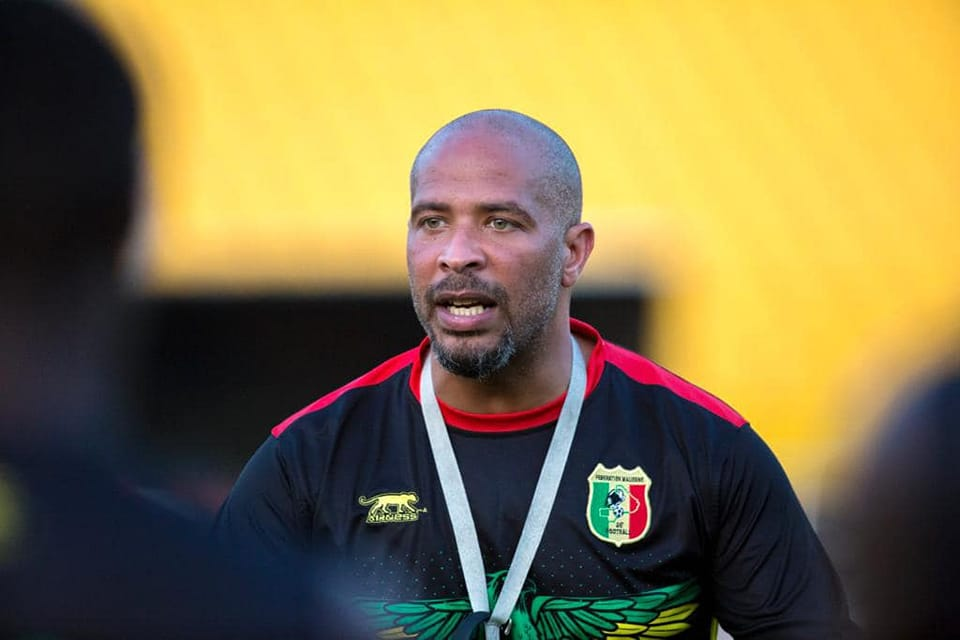
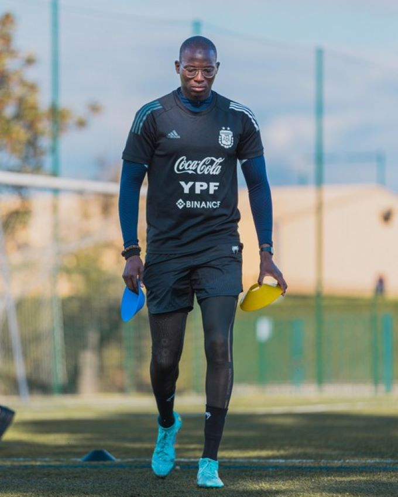

Staff Technique
L'encadrement qui guide nos Aigles vers la victoire
Sélectionneur

Éric Chelle
Mali / France
Ancien défenseur international malien, à la tête des Aigles depuis 2022.
25
Matchs
15
Victoires
65%
Réussite

Boubacar Diarra
Entraîneur Adjoint
Ancien milieu offensif, 45 sélections avec les Aigles

Mamadou Sidibé
Entraîneur des gardiens
Ancien gardien international, 32 sélections

Souleymanekone
Préparateur physique
Diplômé de l'INSEP, 10 ans d'expérience